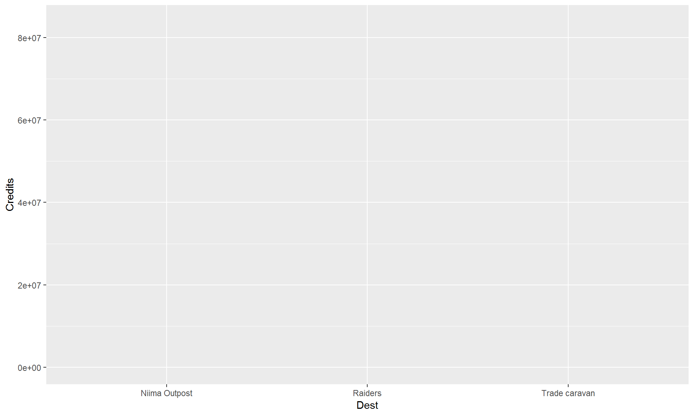
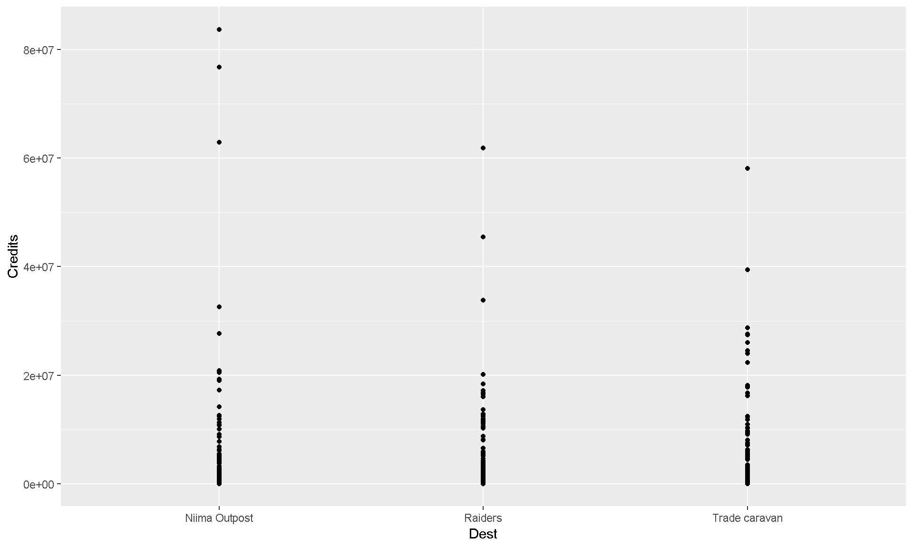
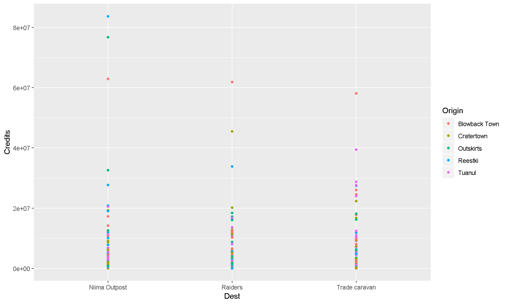
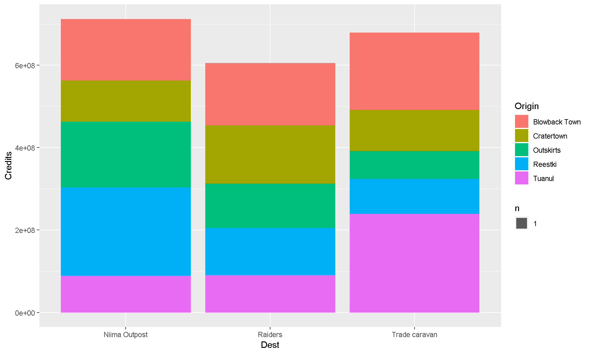

R Training | Day 2
Good morning, young Jedis!

Please connect to your droid
- Open the Start menu (Click the Windows logo on the bottom left of the screen)
- Select
Remote Desktop Connection - Enter
w7-your7digit#orR32-your7digit# - Press Connect
Open your RStudio project
- Open your project folder from last week
- Double click the .Rproj file to open RStudio
- Relax…
Don’t have a project yet?
DOWNLOAD — The Day 1 project files
- Open the
.zipfile - Copy the “junk_data” folder to your Desktop
- Open the folder
- Double click the .Rproj file to open RStudio
Day 2 schedule
- Data transformations
- Add new columns.
- Summarize your data.
- Split groups and categories in your data.
- Save data.

- Continue to make plots.
- Scatter plots and transparency.
- Add a smoothed trend line to the plot.
- Add titles, colors, and axis labels.
- Bar charts.
- Histograms.
- Box plots.
- Log transform your chart axis.
Day 1 review
1. Load your packages
Hint: Put the packages you need at the top of every script.
library("readr")
library("dplyr")
# Your code starts here.2. Load data with read_csv()
my_scrap_data <- "data/starwars_scrap_jakku_full.csv"
scrap <- read_csv(my_scrap_data)
scrap <- filter(scrap, Origin != "All")Read a CSV file using base R
Sometimes there are more ways than one to solve puzzles in R. You don’t actually need a package to read csvs into R. You can do this in base R. Let’s not get carried away with all of the ways to do things, but just know—if one way doesn’t work or is too slow..there is always another way to go about things.
Copy the code below to your R script and run the line with the read.csv function (Hit CTRL + ENTER). It will return the Star Wars scrap data scrap. The character string "~data/scrap.csv" inside the parentheses of the read.csv() function is the path of the data file.
base_r_read_data <- read.csv("X:/Agency_Files/Outcomes/Risk_Eval_Air_Mod/_Air_Risk_Evaluation/R/R_Camp/Intro to R\RTrain - Star Wars/data/starwars_scrap_jakku_full.csv")3. select() and arrange() your data
# Sort from low to high
arrange(scrap, Amount)
# Sort from high to low
arrange(scrap, desc(Amount))
##Select just the Origin cities and Destination (receiving) groups
select(scrap, c(Origin, Dest))4. Filter your data with filter()
Hint: Numbers don’t need quotes.
# Filter to Salvage items with Amounts of 299
scrap_299 <- filter(scrap, Amount == 299)
# Filter to Salvage items that went to trade caravans and raiders
scrap_destination <- filter(scrap, Dest %in% c("Trade caravan", "Raiders"))Questions from Day 1
- Finding new packages and functions
- Use Cheatsheets to find common functions:
- Go to Help > Cheatsheets.
- Data Transformation is what we’re learning now.
- Data Visualization is also good.
- Go to Help > Cheatsheets.
- To search for functions
- google.com: include
rorrstats+the question - stackoverflow.com + use the
[r]tag
- google.com: include
- To search packages in R get the: CRANsearcher
- Use Cheatsheets to find common functions:
- Where’s my History?
- Push the
UP ARROWin the console to scroll through your recent command history. - Or select the
Historytab in the upper right next to theEnvironmenttab.
- Push the
- Get function help inside R:
?arrange()
1 | Data transformation

“How can we best help Rey?”"
We have several different units of scrap items. This means unit conversions are in our future! And, it sounds like we’re going to need some math for this puzzle. Let’s calculate some new columns to help prioritize scrap scavenging work.
2 | mutate()
It’s often useful to edit existing columns in a data frame or add new columns that are functions of existing columns. That’s the job of mutate().
2.1 Get to know your data frame
Before we go changing things in the data frame we’ll need to know the column names and the tables dimensions a bit better. These quick functions are all great ways to describe your data frame.
Data frame details
names(scrap)show the column namesnrow(scrap)number of rowsncol(scrap)number of columnssummary(scrap)summary of all columnsglimpse(scrap)column names, plus a glimpse of first few values (requires loading dplyr package)
2.2 Add a constant value or phrase to new column
First let’s add a column with our names, so that Rey will thank us personally on Liberation Day.
##Type in your name and rank
scrap <- mutate(scrap, scrap_analyst = "Sergeant Derek")2.3 Changing or modifying an existing column
Remember how that unit of Tons was written two ways: TONS and Tons? We can use mutate together with tolower to make sure all of the Salvage scrap is written in the same case. Case matters with R!
scrap <- mutate(scrap, Units = tolower(Units))
##toupper() will change all of the letters in a column to upper case.2.4 Tons to pounds conversions
In our work we often use mutate to calculate new units for measurements. In this case, let’s estimate the pounds for scavenge items that are reported in tons.
Pounds = Scrap in Tons / 2000
Convert an existing column to pounds
Use filter() to subset our data down to the items reported in tons and then use mutate() to convert the Amount column to pounds and change the Units column to “pounds”.
scrap_pounds <- filter(scrap, Units = "cubic yards")
scrap_pounds <- mutate(scrap_pounds,
Amount = Amount/2000,
Units = "pounds")Pro-tip!
If you use
mutate()and provide a single value for a column such asSalvage_Analyst = "Sergeant Derek", then every row in the column you created will have that value. If you provide a vector of values, such asAmount = Amount/2000, then the column you create will have a list of values that each correspond to the values in the vector you provided. If you provide a vector that has a different length than the number of rows in your data frame, you’ll get an error telling you that the number of values you provide must be equal to the number of rows in your data frame or be a single value.
2.5 Find your neighbor’s Origin City
Now let’s see if you can use mutate() to help match the description of the Salvage from your City. Give your neighbor a series of clues about your origin city based on facts about the Salvage from that location.
Here’s a hint for ways to describe your City by describing its Salvage scrap data.
My City’s name starts with a T. My City sold more than 1000 Acceleration compensators to a Trade Caravan. The total price was at least 800 credits.
Use mutate(), filter(), and arrange() to figure out a way of describing your City by its Salvage scrap. Then, provide this information to your neighbor and have them figure out what City you are from.
Here’s a snippet to get you started.
library("dplyr")
## Filter down your data to the type of salvage in the hint
my_scrap <- filter(scrap, Salvage == "Acceleration compensator")
##arrange the data by
my_scrap <- arrange(my_scrap, desc(Amount))I have now written my_scrap like a million times and I am sick of it. R is so stupid why do I have to type all the time? I have rebels to protect and I haven’t eaten in 2 days.
You DON’T have to do that much typing. You can connect your functions if you are using the same data set.
You can chain the filter() and arrange() functions together and do everything in one go. For that you can use the %>% (pipe).

In a script the %>% is read as “and then”. In the code below we are telling R to mutate the data and then to filter it.
##Using the question Tuanul example above
my_scrap <- scrap %>%
filter(Salvage == "Acceleration compensator") %>%
arrange(my_scrap, desc(Amount))3 | left_join()
Remember our different unit issue? Well, we do not want to convert the units one by one, and guess what? Our droid found a unit converter table. This will make things way easier!

##Name your table
conversions <- "data/conversion_table.csv"
##Read in your table
conversions <- read_csv(conversions)
##Join the scrap to the conversion table
#We can also drop the units column since its duplicated by the old data set and it's been corrected
scrap <- left_join(scrap, conversions, by = c("Salvage" = "desc")) %>%
select(-units)Hint: Remeber to type ?left_join if you are wondering what the arguments are.
4 | ifelse()
Sometimes you may not want to add the same value to an entire column, in other words you want to mutate() conditionally. We can use ifelse() to do this.
##Convert tons to pounds, but only if the units are not already in tons.
scrap <- scrap %>%
mutate(Ton_Conv = ifelse(Units == 'tons', Amount, Amount * pounds / 2000))Wow!! Congratulations of galactic proportions to you. We have a clean and tidy data set. Someday if we receive data to append, all we will do is re-run this script and in 5 seconds we will have a cleaned up data set again!
We now have the amount of tons sold and the price per ton, but we want to know the total amount of credits for each transaction. How would we calculate that?
##Calculate credits for each transaction
scrap <- scrap %>%
mutate(Credits = Ton_Conv * Price_per_Ton)Now, we want to make some plots and really visualize this data, but Junk Bosses like old Unkar don’t usually ask us for the raw data. We as data analysts get questions like, What’s the highest number? What’s the lowest number? What is the mean tonnage from Cratertown? Fast! Faster!! So, let us move on to summarize.
5 | summarize() this

summarize() allows you to apply a summary function like median() to a column and collapse your data down to a single row. To really dig into summarize you’ll want to know some common summary functions, such as sum(), mean(), median(), min(), and max().
sum()
Use summarize() and sum() to find the total credits from all Salvage.
summarize(scrap, Total_Credits = sum(Credits))mean()
Use summarize() and mean() to calculate the mean weight in tons in the Salvage reports.
summarize(scrap, mean_weight = mean(Ton_Conv, na.rm = T))## # A tibble: 1 x 1
## mean_weight
## <dbl>
## 1 3724.Note the
na.rm = TRUEin themean()function. This tells R to ignore empty cells or missing values that show up in R asNA. If you leavena.rmout, the mean funciton will return ‘NA’ when it finds a missing value in the data.
median()
Use summarize to calculate the median weight in the Salvage reports.
summarize(scrap, median_price = median(Ton_Conv, na.rm = T))## # A tibble: 1 x 1
## median_price
## <dbl>
## 1 1298max()
Use summarize to calculate the maximum price per ton any scrapper got for their Salvage.
summarize(scrap, max_price = max(Price_per_Ton, na.rm = T))## # A tibble: 1 x 1
## max_price
## <dbl>
## 1 7211.min()
Use summarize to calculate the minimum price per ton any scrapper got for their Salvage.
summarize(scrap, min_price = min(Price_per_Ton, na.rm = T))## # A tibble: 1 x 1
## min_price
## <dbl>
## 1 29.2nth()
Use summarize() and nth(Origin, 12) to find the name of the Origin City that got the 12th highest scrapper haul.
Hint: Use arrange() first.
arrange(scrap, desc(Ton_Conv)) %>% summarize(price_12 = nth(Origin, 12))
sd()
What is the standard deviation of the credits?
summarize(scrap, stdev_Credits = sd(Credits))
quantile()
Quantiles are useful for finding the upper or lower range of a column. Use the quantile() function to find the the 5th and 95th quantile of the prices.
summarize(scrap,
price_5th_pctile = quantile(Price_per_Ton, 0.05, na.rm = T),
price_95th_pctile = quantile(Price_per_Ton, 0.95))Hint: add na.rm = T to quantile().
n()
n() stands for count.
Use summarize and n() to count the number of reported Salvage that went to a Niima outpost.
Hint: Use filter() first.
filter(scrap, Dest == "Niima outpost") %>% summarize(salvage_count = n())
Exercise
- Create a Star Wars scrap summary using 3 of the math functions above.
6 | group_by()
Wouldn’t it be nice if we could easily find the mean price for every Origin City? It’s time for
group_by()!
If you thought summarize was awesome, wait until you include group_by with your summarize commands.
Try using group_by with the column Origin and then use summarize to count the number of Salvage reports from each planet.
group_by(scrap, Origin) %>% summarize(origin_count = n()) %>% ungroup()Pro-tip!
Ending with
ungroup()is good practice. This will prevent your data from staying grouped after the summarizing has been completed.
What about the mean of the prices that each Origin City got?
Let’s use group_by with the column Origin again, but this time use summarize to find the mean(Price_per_Ton) for each Origin City.
group_by(scrap, Origin) %>%
summarize(mean_price = mean(Price_per_Ton, na.rm = T)) %>% ungroup()That’s a lot of digits!
6.1 round()
You can round the prices to a certain number of digits using the round() function. We can finish by adding the arrange() function to sort the table by our new column.
group_by(scrap, Origin) %>%
summarize(mean_price = mean(Price_per_Ton, na.rm = T),
mean_price_round = round(Price_per_Ton, digits = 2)) %>%
arrange(mean_price_round) %>% ungroup()NOTE: The round() function in R does not automatically round values ending in 5 up, instead it uses scientific rounding. It rounds values ending in 5 to the nearest even number, so 2.5 rounded to the nearest whole number using round() is 2, and 3.5 rounded to the nearest whole number is 4. If you want to round all values ending in 5 up, then you’ll have to use a rounding function from another package.
7 | Save files
Let’s save the last summary table we created to a CSV. That way we can print it to have it transmitted through Droid courier to Unkar. To save a data frame we’ll use the write_csv() function from our favorite readr package.
# First give the new data a name
scrap_summary <- group_by(scrap, Origin) %>%
summarize(mean_price = mean(Price_per_Ton, na.rm = T),
mean_price_round = round(Price_per_Ton, digits = 2)) %>%
arrange(mean_price_round) %>% ungroup()
# Write the file to your project folder
write_csv(scrap_summary, "mean_prices_origin.csv")Pro-tip!
Warning! R will overwrite a file if the file already exists in a folder. It will not ask for confirmation. You will not collect $200.
8 | Grouped mutate()
We can bring back mutate to add a column based on the grouped values in a data set. For example, you may want to add a column showing the mean price by country to the whole table.
When you combine group_by and mutate the new column will be calculated based on the values within each group.
group_by(scrap, Origin) %>% mutate(origin_mean_price = mean(Price_per_Ton, na.rm = T)) %>% ungroup()Exercise
- Find the median weight for each Destination.
group_by(scrap, Dest) %>%
mutate(median_weight = _________________)Show code
group_by(scrap, Dest) %>%
mutate(median_weight = median(Ton_Conv, na.rm = T))Break time
Take 5 minutes to relax.
9 | ggplot
All of this information is great, but Rey doesn’t have time to look at tables. Let’s visualize the data with some plots. Let’s go more in-depth into ggplot.
9.1 The 3 parts of a ggplot
9.1.1 1. Set the base plot (the Dorian plot).
ggplot(scrap)
Note when we load the package it’s
library ("ggplot2")but when we use the function, it’sggplot(scrap)without the 2 following ggplot. It’s annoying, but that’s the way it is.
9.1.2 2. Set the X, Y (aesthetics).
Aesthetics are the visual components from the data that you want to use in the chart. These also determine the dimensions of the plot.
ggplot(scrap, aes(x = Dest, y = Credits)) 
9.1.3 3. Add layers (geometries).
ggplot(scrap, aes(x = Dest, y = Credits)) +
geom_point()
Now let’s use color to show the origins of the scrap
ggplot(scrap, aes(x = Dest, y = Credits, color = Origin)) +
geom_point()This is a too much detail. Let’s make a bar chart and add up the sales to make it easier to understand.
ggplot(scrap, aes(x = Dest, y = Credits, fill = Origin)) +
geom_bar(stat = "sum")